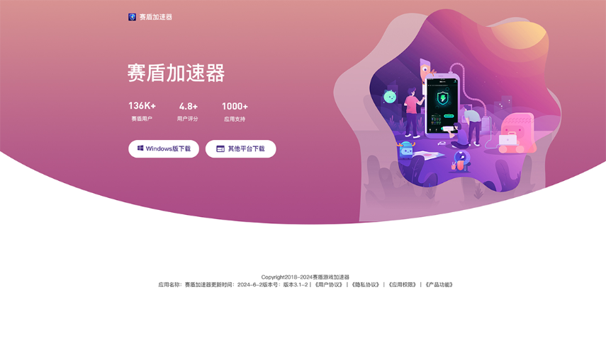
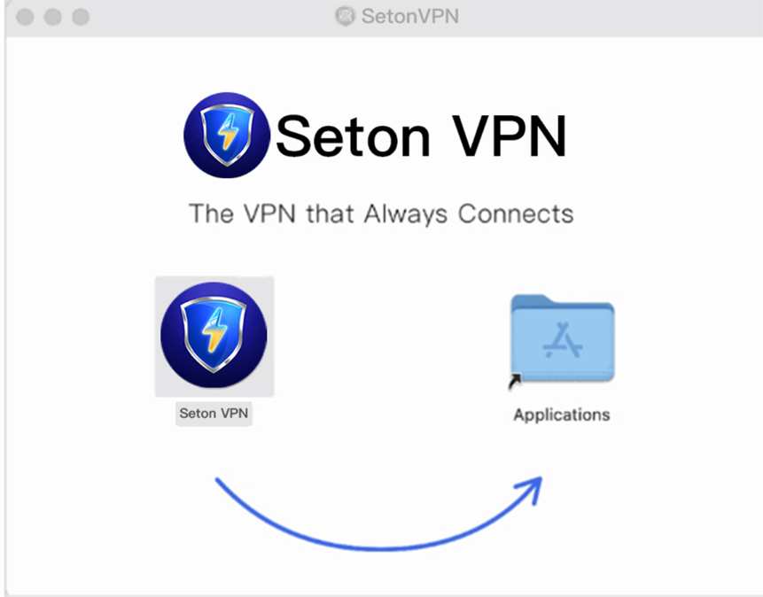
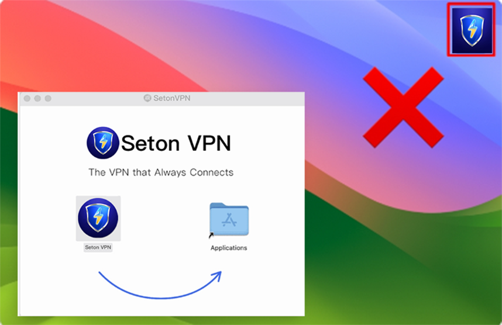
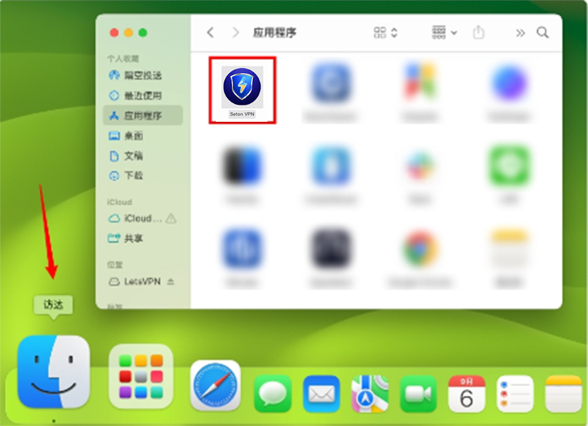
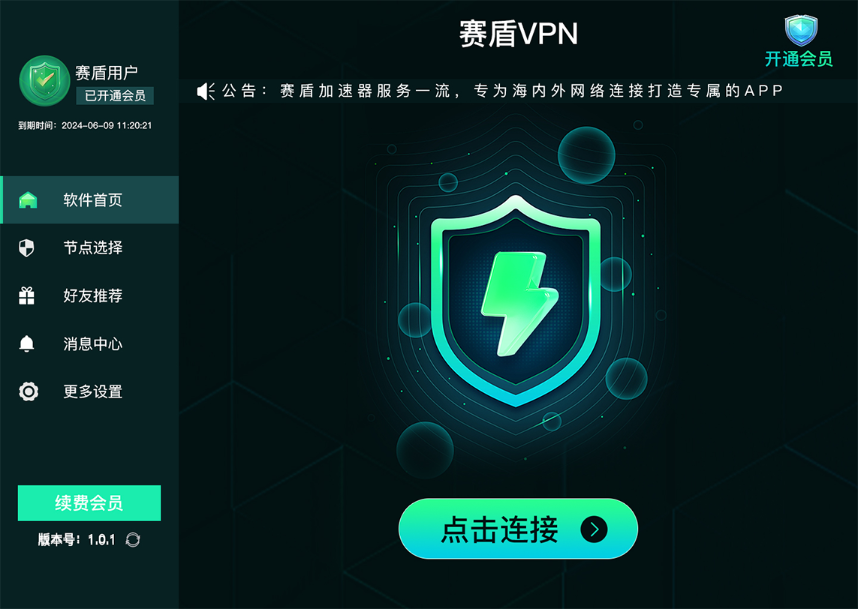
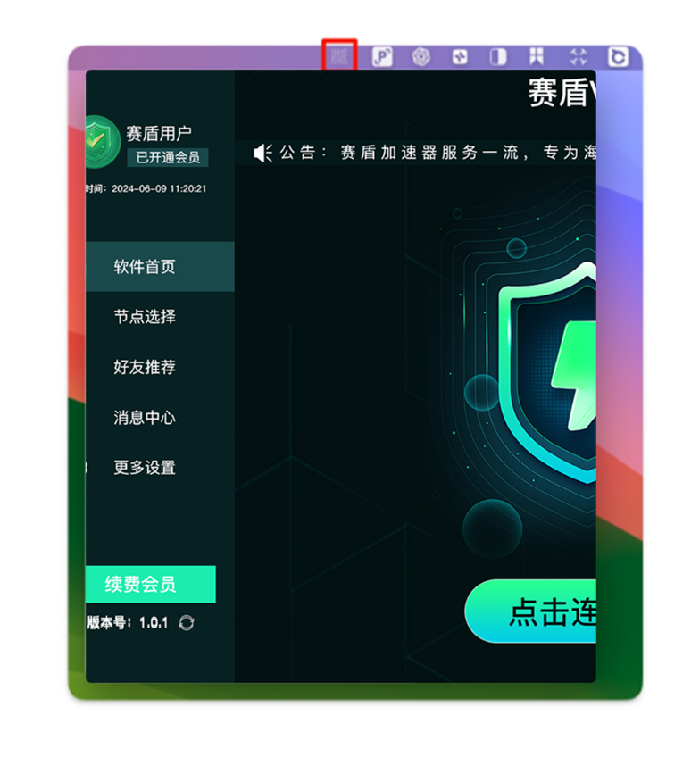

返回
欢迎查看常见问题
智慧服务，让您使用更简单

MacOS 版本安装教程
若您 macOS 点击下载安装后没有反应，请查看本文章快速解决
很多 macOS 用户点击下载安装后会出现没有反应的情况，只需要依照教程就能正常安装并运行，具体操作如下(App Store 下载用户请忽略):
如何安装:
官网
{{downloadLink}} 点击 mac 下载，打开 dmg 安装包

将赛盾VPN 图标拖曳到 Applications 里面；

如何开启:
错误方式:桌面快连图标，双击不会有反应
安装完成后，桌面的赛盾图标，不是应用捷径，是安装文件夹

正确方式:在应用程序，打开赛盾
在底部程序坞打开访达(Finder)→>应用程序，找到安装完成的赛盾，双击点开

如何使用:
首次打开赛盾连接，需要通过电脑系统验证输入您电脑的「锁屏密码」，完成后即显示成功连接。

常见问题:
若要开启赛盾，先到应用程序打开，打开后图标会显示顶部菜单栏，不会在底部程序坞中。

若您依然有使用问题，可以通过本文章右边客服按钮 or 发送邮件给 {{kfEmail}} 我们将有专人来负责处理您的问题。